Arco d'Augusto
ID WD: Q1072853

Why the Arch of Augustus? 🏛
The Arch of Augustus in Rimini is a magnificent Roman triumphal arch, built in 27 BC in honor of Emperor Augustus. It's the oldest Roman arch still standing in Italy and marks the official end of the Via Flaminia, a crucial Roman road connecting Rimini (ancient Ariminum) to Rome. It is important due to its historical significance as it symbolizes the "Pax Augusta", a period of relative stability and prosperity, and it has become a symbol of Rimini: along with the Ponte di Tiberio, it is an iconic symbol of Rimini and even appears on the city's coat of arms. It serves as a powerful reminder of the city's significant role in the Roman Empire .
I decided to enrich its entity because maintaining its profile Wikidata up-to-date is crucial, given its high visibility as an iconic landmark in Rimini and the central role in Rimini's identity and tourism.
SPARQL queries to detect the gaps 🔍
DESCRIBE Query
First of all, I use this query with the DESCRIBE function to see all the properties and objects belonging to the Arch of Augustus. I find it useful to see if it is already well described or not, and to see which properties may be missing.
PREFIX wd: <http://www.wikidata.org/entity/>
PREFIX rdfs: <http://www.w3.org/2000/01/rdf-schema#>
PREFIX bd: <http://www.bigdata.com/rdf#>
PREFIX wikibase: <http://wikiba.se/ontology#>
DESCRIBE wd:Q1072853
WHERE {
SERVICE wikibase:label { bd:serviceParam wikibase:language "it,en". }
}
I notice that some other interesting properties to be added could be the website and inscription on the Arch.
SELECT Query
Then I proceed with a SELECT query, using the OPTIONAL function to see the properties worth describing that can be missing from the knowledge graph.
PREFIX wd: <http://www.wikidata.org/entity/>
PREFIX wdt: <http://www.wikidata.org/prop/direct/>
PREFIX rdfs: <http://www.w3.org/2000/01/rdf-schema#>
SELECT DISTINCT ?monuments ?monument_name ?city (YEAR(?inauguration_date) AS ?inauguration_year)
?material ?style ?eponym ?website ?inscription
WHERE {
VALUES ?monuments
{ wd:Q1072853 }
?monuments rdfs:label ?monument_name .
FILTER(LANG(?monument_name) = "it")
OPTIONAL { ?monuments wdt:P856 ?website. } # I look for the website
OPTIONAL { ?monuments wdt:P1684 ?inscription. } # I look for the inscription
OPTIONAL { ?monuments wdt:P571 ?inauguration_date. } # I look for the inauguration date
OPTIONAL { ?monuments wdt:P186 ?constrmaterial. } # I look for the materials of construction
OPTIONAL { ?monuments wdt:P149 ?archstyle. } # I look for the architectural style
OPTIONAL { ?monuments wdt:P138 ?namedafter. } # I look for the eponym
SERVICE wikibase:label {
bd:serviceParam wikibase:language "en,it" .
?moncity rdfs:label ?city .
?constrmaterial rdfs:label ?material .
?archstyle rdfs:label ?style .
?namedafter rdfs:label ?eponym .
}
}
I can notice that these are all missing information from the result table.
Use of LLMs to enrich the knowledge graph 🤖
I asked Chat GPT, Deep Seek and Gemini to help me with the missing information and compared their outcomes. I asked the three LLMs two questions.
Zero-shot prompt
The first question was a zero shot prompt:
"Can you tell me the inauguration date, the construction materials, the architectural style, the inscription, and after whom the Arch of Augustus in Rimini was named? Thank you!"
Chat GPT's answer
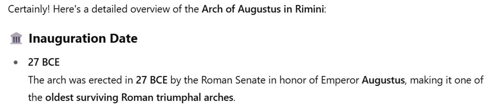 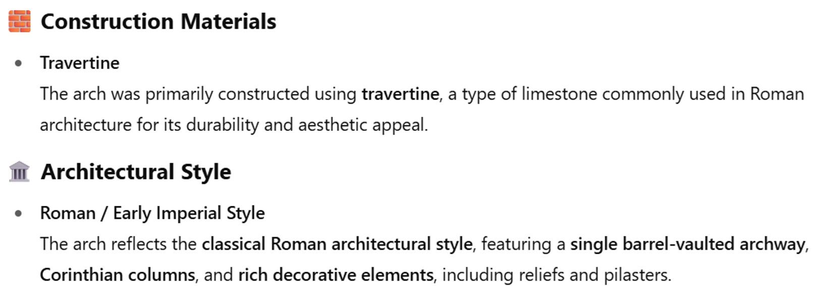 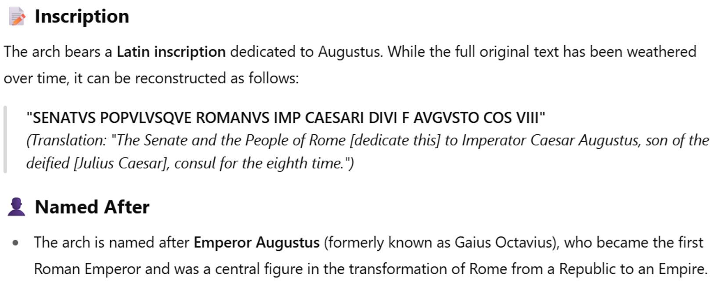
Chat GPT makes confusion between travertine and Istrian stone which are not the same thing, and it doesn't know precisely the inscription on the Arc, it has it incomplete.
Deep Seek's answer
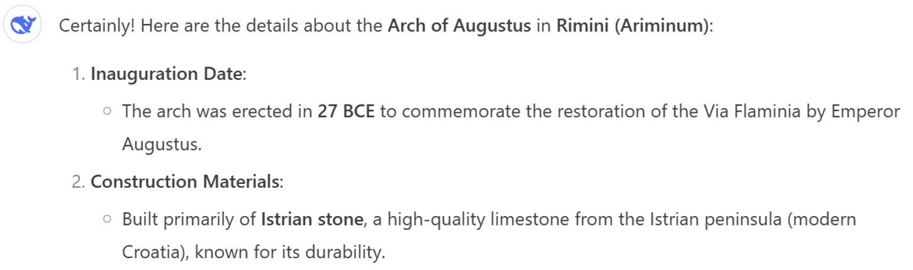 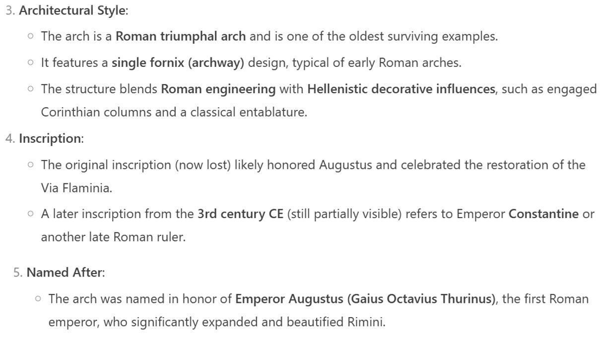
On the other hand, Deep Seek knows that it is built in Istrian stone but is mistaken on the inscription as well.
Gemini's answer
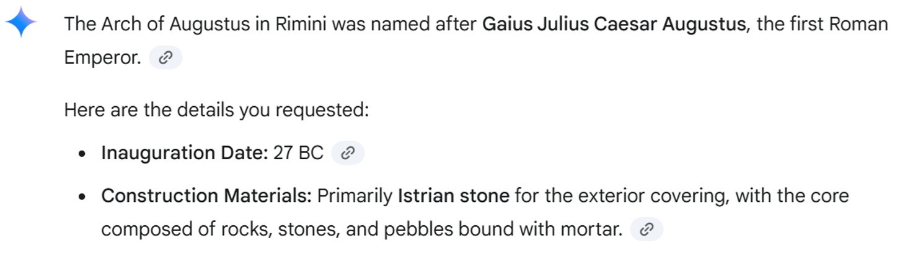 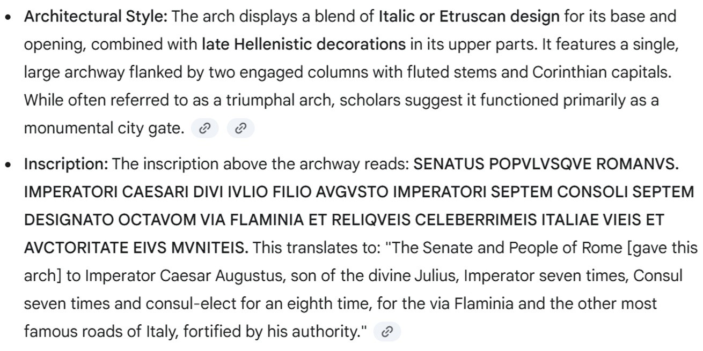
Gemini is the most accurate one in its answers as it even has the right inscription and links the sources for the information it provides.
Some researches on reliable sources confirmed that the inauguration date of the Arch of Augustus is 27 BC, the monument was erected to honor Emperor Octavian Augustus and the style is that of classical Roman architecture. It is made of Istrian stone and the inscription reads: SENATVS · POPVLVS · COS · SEPT · DESIGNAT · OCTAVOM· CELEBERRIMEIS· ITALIAE· VIEIS · CONSILIO.
Sources: Website of the Rimini city hall, Website of Rimini tourism and the book Pasini Guida per Rimini, Maggioli Editore , Rimini, 1989.
This implies that it is always important to verify information coming from LLMs on reliable sources, even for factual data like this.
Few-shots chain-of-thought prompt
I then decided to add this information in Wikidata through a CONSTRUCT query. Therefore, I ask ChatGPT and Deep Seek to help me create a CONSTRUCT query through a few-shots chain-of-thought prompt.
The question was formulated as it follows, giving as examples two queries made to create new triples for the ArCo knowledge graph :
"Hi, I need to enrich the entity wd:Q1072853 (Arch of Augustus in Rimini) in the Wikidata knowledge graph with some new triples. I noticed that in the page various things are missing such as:
- the inauguration date;
- the eponym;
- the architectural style;
- the material;
- the website;
- the inscription on the arc.
Can you create a CONSTRUCT query for Wikidata with all this information, following these examples taken from some queries made to the ArCo knowledge graph?:
PREFIX rdfs: <http://www.w3.org/2000/01/rdf-schema#>
PREFIX clv: <https://w3id.org/italia/onto/CLV/>
PREFIX cis: <http://dati.beniculturali.it/cis/>
PREFIX a-cd: <https://w3id.org/arco/ontology/context-description/>
PREFIX l0: <https://w3id.org/italia/onto/l0/>
CONSTRUCT {
?place a cis:GeographicalFeature ; l0:name "Firenze" .
?event a cis:CulturalEvent ; clv:hasSpatialCoverage ?place ; l0:name ?eventName ;
cis:involvesCulturalEntity ?culturalProperty .
?culturalProperty a-cd:hasAuthor ?author ; l0:name ?title .
?author l0:name ?authorName
}
WHERE {
?place a cis:GeographicalFeature ; rdfs:label "Firenze" .
?event a cis:CulturalEvent ; clv:hasSpatialCoverage ?place ; rdfs:label ?eventName ;
cis:involvesCulturalEntity ?culturalProperty .
?culturalProperty a-cd:hasAuthor ?author ; rdfs:label ?title .
?author rdfs:label ?authorName
FILTER(REGEX(?authorName, "andrea del Castagno", "i"))
}
PREFIX rdfs: <http://www.w3.org/2000/01/rdf-schema#>
PREFIX clv: <https://w3id.org/italia/onto/CLV/>
PREFIX cis: <http://dati.beniculturali.it/cis/>
PREFIX a-cd: <https://w3id.org/arco/ontology/context-description/>
PREFIX l0: <https://w3id.org/italia/onto/l0/>
CONSTRUCT {
?author cis:exhibitedAt ?event .
}
WHERE {
?event a cis:CulturalEvent ;
cis:involvesCulturalEntity ?culturalProperty .
?culturalProperty a arco:HistoricOrArtisticProperty ;
a-cd:hasAuthor ?author ;
rdfs:label ?title .
?author rdfs:label ?authorName .
FILTER (REGEX (?authorName, "andrea del Castagno", "i") )
}
Let's think step by step!"
Chat GPT's answer
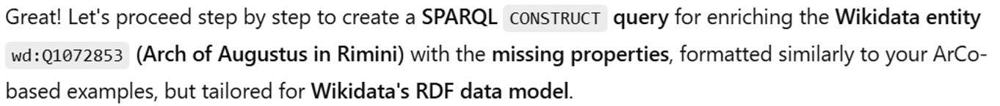 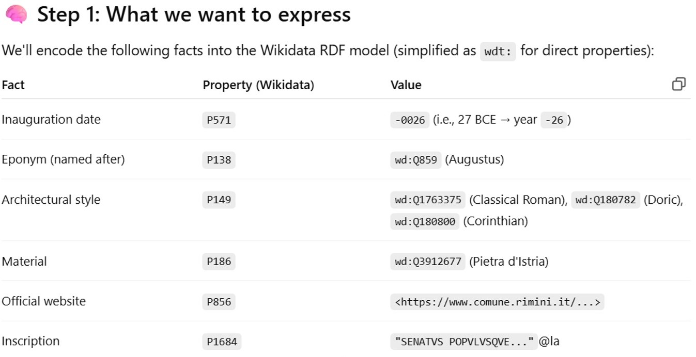
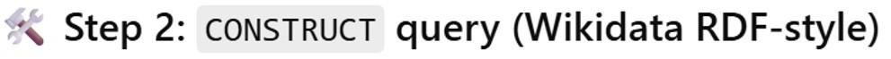
PREFIX wd: <http://www.wikidata.org/entity/>
PREFIX wdt: <http://www.wikidata.org/prop/direct/>
PREFIX rdfs: <http://www.w3.org/2000/01/rdf-schema#>
PREFIX xsd: <http://www.w3.org/2001/XMLSchema#>
CONSTRUCT {
wd:Q1072853 wdt:P571 "-0026-01-01T00:00:00Z"^^xsd:dateTime ;
wdt:P138 wd:Q859 ;
wdt:P149 wd:Q1763375, wd:Q180782, wd:Q180800 ;
wdt:P186 wd:Q3912677 ;
wdt:P856 ;
wdt:P1684 "SENATVS POPVLVSQVE ROMANVS IMP CAESARI DIVI F AVGVSTO COS VIII TRIBVNIC POTEST XX"@la .
wd:Q859 rdfs:label "Ottaviano Augusto"@it .
wd:Q1763375 rdfs:label "Architettura romana classica"@it .
wd:Q180782 rdfs:label "Ordine dorico"@it .
wd:Q180800 rdfs:label "Ordine corinzio"@it .
wd:Q3912677 rdfs:label "Pietra d'Istria"@it .
}
WHERE {
BIND(wd:Q1072853 AS ?monument)
}
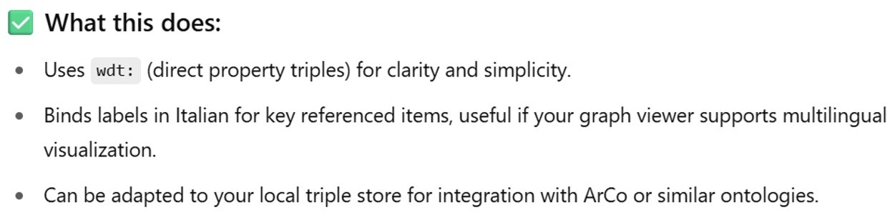
The properties are fine, but the IDs for Augustus, Istrian stone, and the architectural style are wrong and need to be corrected with (Augustus: Q1405, Istrian stone: Q1401767, Ancient Roman architectural style: Q223750).
Additionally, the WHERE section was not filled out correctly like in the example queries I provided.
Deep Seek's answer
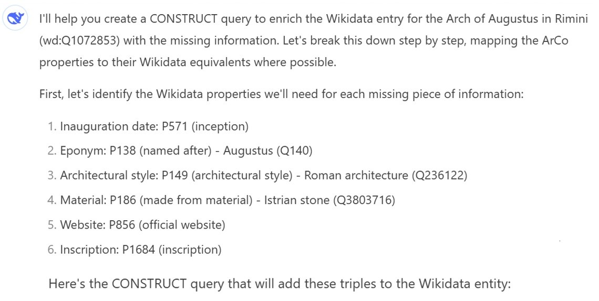
PREFIX wd: <http://www.wikidata.org/entity/>
PREFIX wdt: <http://www.wikidata.org/prop/direct/>
CONSTRUCT {
wd:Q1072853 wdt:P571 "27 BCE"^^xsd:gYear ; # inception date (27 BCE)
wdt:P138 wd:Q140 ; # named after (Augustus)
wdt:P149 wd:Q236122 ; # architectural style (Roman architecture)
wdt:P186 wd:Q3803716 ; # made from material (Istrian stone)
wdt:P856 "https://www.riminiturismo.it/visita/arco-d-augusto" ; # official website
wdt:P1684 "IMP?CAESAR?DIVI?FILIVS?AVGVSTVS?PONTIFEX?MAXIMVS?IMP?XIIII?TRIBVNIC?POTEST?XVII?P?P?"@la . # inscription
}
WHERE {
# We don't need to match any existing data since we're adding new information
SERVICE wikibase:label { bd:serviceParam wikibase:language "[AUTO_LANGUAGE],en". }
}
Here the problems are the same, the objects are not correct, even if in the comments it identified the Istrian stone, roman architecture etc... in the results the were changed! Therefore, I need to modify the query to generate meaningful triples.
Gemini's answer
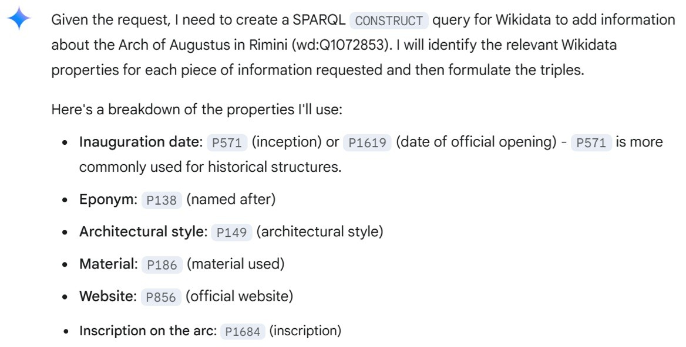 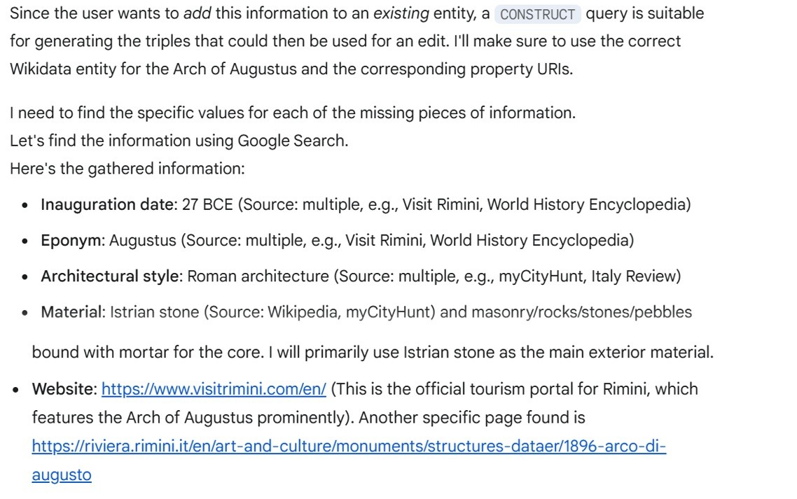 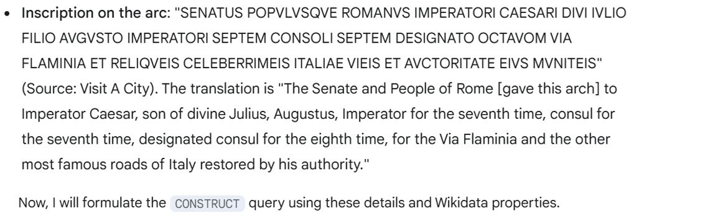
PREFIX wd: <http://www.wikidata.org/entity/>
PREFIX wdt: <http://www.wikidata.org/prop/direct/>
PREFIX xsd: <http://www.w3.org/2001/XMLSchema#>
CONSTRUCT {
wd:Q1072853 wdt:P571 "0027-01-01T00:00:00Z"^^xsd:dateTime ;
wdt:P138 wd:Q1405 ;
wdt:P149 wd:Q12502 ;
wdt:P186 wd:Q375253 ;
wdt:P856 Here the problems are the same, the objects are not correct, even if in the comments it identified the Istrian stone, roman architecture etc... in the results the were changed! Therefore, I need to modify the query to generate meaningful triples.
Correct CONSTRUCT query and triples ✅
I need to modify manually the CONSTRUCT query in order to have correct triples as a result:
PREFIX wd: <http://www.wikidata.org/entity/>
PREFIX wdt: <http://www.wikidata.org/prop/direct/>
PREFIX xsd: <http://www.w3.org/2001/XMLSchema#>
CONSTRUCT {
?monument wdt:P571 ?inaugurationdate . # Inauguration date of the Arch of Augustus
?monument wdt:P138 ?eponym . # Dedicated to Augustus
?monument wdt:P149 ?architecturalstyle . # Architectural style: the Roman classical architectural style
?monument wdt:P186 ?material. # Material: Istrian stone
?monument wdt:P856 ?site1 . # Website 1
?monument wdt:P856 ?site2 . # Website 2
?monument wdt:P1684 ?inscription . # Inscription
}
WHERE {
BIND(wd:Q1072853 AS ?monument) # ?monument is the Arch of Augustus
BIND("-0026-01-01T00:00:00Z"^^xsd:dateTime AS ?inaugurationdate) # ?inaugurationdate is 27 BC
BIND(wd:Q1405 AS ?eponym) # ?eponym is Augustus
BIND(wd:Q223750 AS ?architecturalstyle) # ?architecturalstyle is the Roman classical architectural style
BIND(wd:Q1401767 AS ?material) # ?material is the Istrian stone
BIND( AS ?site1) #?site1 is the website 1
BIND( AS ?site2) #?site2 is the website 2
BIND("SENATVS POPVLVS COS SEPT DESIGNAT OCTAVOM CELEBERRIMEIS ITALIAE VIEIS CONSILIO" AS ?inscription) # the string is the inscription
}
Here are the final results with some well constructed triples: